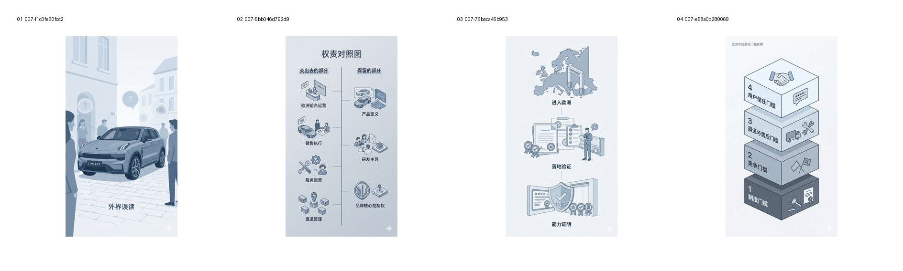
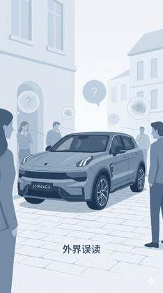
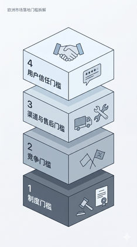

验证显式统一 SVP 对连续感、整体感和视觉一致性的作用。
Evidence: references/text2pic/conversations/007-Branch-1-V1视觉系统设计/IMAGE_MANIFEST.md § 6. 第五组：SVP 第 1 轮（8 张） / B 组


c7b76cb4915c7824…
afbaeb51413933ec…
cd8975ffdd06d05f…

dcf8cc6d4ae8d6ac…